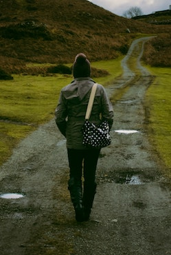
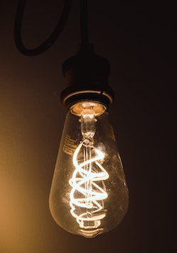

Random Musings
by Elaine Palmore
Have a question or a comment?
Email Elaine

Sobriety, Where is it?
Years ago, when I was teaching preschool, a child announced to me that he and his family were, “Driving to Thanksgiving.” In his mind Thanksgiving was always out there in another place and could be accessed by driving. Sobriety is a similar situation in the minds of some folks who struggle with addiction. Sobriety is not a place that you can reach by car, airplane, boat, or any other type of vehicle.
Sobriety is not a feeling or a place to which you can drive. It is a process, and the only way out of your misery is through the process. The process begins with surrender to the addiction and realizing that the addiction is stronger than you. After that, you are in a struggle to save your own life, you will require help. You cannot be or stay sober on your own. At some point your addiction has become the strongest force in your life. This craving is greater than family, friends, religious beliefs, and even stronger than self preservation.
For some sobriety will be AA or NA or a recovery community that forms from being in treatment. For others it may come from a therapist or family doctor. It matters not how you come to be sober, it only matters that you no longer have the obsession to drink or take drugs to the point that you no longer continue living.
There is a large warm light at the end of the recovery tunnel. Recovery is a safe place but it is not an effortless destination. The methods are simple but not easy and it is well worth the journey.

What Makes Us Happy?
What makes you happy? Think about it. Is it good food, good friends, or driving a Maserati? Is it going fast, or is it going slow, reckless versus cautious? There are so very many choices. Alas the choice is not always ours to make. Can you be happy if our country is in danger from the outside or from the inside? Can you be happy if you are in poor health? Can you be happy if you are wealthy and had more money to spend or would you be miserable, always worrying that the fortune you have made or inherited would be lost or taken away?
Happiness is truly a relative term and is different for each of us. For me, I think that if I had a porch swing with a great view of a piece of water and a good book, I could be happy. Although I am not always happy, it helps to be with like-minded people with whom I can share my life experiences.
What would it take to satisfy you? How about if you had second graders who follow directions, or college students who willingly turn off their cell phones to listen to you, would that satisfy your needs? How about if you were driving through the Italian countryside with someone you love or had a number of houses all across the world, would that make you happy?
What would your life be like if you just had that illusive college degree that you have dreamed about for years? What would happen if you earned that degree and nothing changed or, with that degree, you finally got that job you always wanted and hated it because your boss was a drag and no amount of money could keep you there?
Now that the autumn of my years are approaching and most of these questions have been answered, what now? Actually, I never anticipated living to be this old so I don’t have a game plan at almost 70. Being in good health and being able to maintain a healthy lifestyle is of paramount importance, everything else is irrelevant. Clearly there are some perks that are out of my reach and I have yet to get that porch swing, but I am grateful for the sunshine that flows into my living room in the morning. I love watching the birds and squirrels eat from our feeder each day. Most of all I love spending time with my husband, two spirited cats, an antic loving dog and all the rest of those I am grateful to call family. This for me is being happy . . . maybe even content.

Life From The Backseat
My experiences in the rear seat of a moving passenger vehicle exceed that of most females my age. You see my grandson’s car seat is in the backseat and I get to sit next to him. When we are riding around town we can joyfully eat, drink, play games, look at landmarks and farm animals, advise his mother my daughter on how to drive, and generally have a grand time. If you knew his mother you would know that no one has successfully given her directions since the very early days of her life and those were summarily ignored.
We all feel very lucky to have my daughter with us because of her many near death experiences as a youth. We were blessed in those early days to live in an apartment complex with a pool, hence the near death experiences. I have two children, one male and one female with very distinctive personalities. My son would arrive at the pool and wait for me at the water’s edge. My daughter would dart into the pool area and head straight for the deep water by the diving board. Her intent was to jump into the deep water before the rest of our troupe could enter, even though she could not swim. She was little bitty and required being rescued and reprimanded each time. At first we thought this quirk was funny and fun but it became a very serious problem in a short time.
At any rate, now that my grandson is three he has pretty much the same temperament as my daughter, in that deep end of the pool sort of way. The blessing here is the top rated car seat with straps and harnesses to hold him in place for these short but memorable jaunts. By listening to him it is possible to catch up on the latest episode of Masha and the Bear, Daniel the Tiger, or Sesame Street and have lively conversations about each. Lately we have realized the existence of the Incredible Hulk and Iron Man which has changed the tenor of our conversations.
How well I remember the comments that we were hearing about my daughter all over again with my grandson. “Oh she is such a spirited child,” or “Is she always so active?” Yes, he also is spirited. In his case it is possible to eat, jump on a trampoline, and sing with the TV all at the same time. At this juncture we are experimenting with “stunts” which are hair raising events that he is recreating from TV or movies that he loves. I cringe when I hear, “Watch this Mimi!”
The quiet times in the backseat these days are glorious. I am so grateful to be a grandmother.
Willingness
My dear Uncle Albert told me shortly after I sobered up that he had been praying for me the whole time that I had been drinking and destroying my life. Without thinking, I replied, “I didn’t know you could see me.” I seriously believed that I was invisible! I imagined or hoped that people who loved and cared for me could not observe the mistakes and self destructive behavior. I rejected or ignored the people who cared for me and was unable or unwilling to live my life differently.
Near the end of my career of drinking and inappropriate behavior, I received a phone call from my mother. She informed me that she knew that I was in “bad shape,” and that her belief was that if I didn’t quit drinking soon, I would contract Cirrhosis of the liver and die for sure. She said that she had looked up the symptoms. Her next comment riveted me to the spot where I was standing. She announced in a loud voice, “I have called Alcoholics Anonymous and they are coming after you.” I lived in constant fear for the next few weeks that a team of sober people was on their way to drag me out and to those dreaded meetings.
If you leave a plant in a dark place it will not grow and will eventually shrivel up and die. When the miracle happened and I become willing to acknowledge and accept love it naturally began to nurture me and make my life whole again like that plant, being moved to the sunlight. In my Al the Dragon book I mention in the preface that “people loved me until I could love myself,” and truly that is the process that helped me to go from struggling to some level of serenity. If you look at your life as I did and make a list of all the horrible things you have done and come to believe that no one could possibly love you, you are mistaken. Your higher power loves you and so do I.
For me the higher power concept took longer to materialize. I had a different higher power every day until I discovered one that could be trusted. It turned out to be the image of my grandmother that got me over the hurdle, so I stuck with that for as long as it worked. One of my greatest fears was that someone would see me praying. Praying was a singular event and often done with doors closed and blinds pulled down. There were a few years that passed before I would even admit to praying or to speak about my higher power. When I told my story at birthdays I would always omit describing my relationship with God because it was just too personal.
If you haven’t discovered your willingness just yet, be patience and stay away from self pity and resentment. Believe that it will come when you need it most. Self knowledge will not keep you sober but loving yourself is a giant step in the right direction into the light. Eventually, there will be a profound alteration in your reaction to life, love and honesty, and you will be able to see yourself as worthy of love and begin to recover.
In joy and gratitude,
Elaine Palmore

Gratitude
One of the parents at a school where I taught for many years told me one afternoon that gratitude was the essential element to all of life. She had done the research for her Ph.D. all over the world and this theory was the outcome. She studied at Harvard and Vanderbilt and lived with Soto Buddhist Nuns for a year in a cloistered Buddhist monastery in Japan. Paula studied the factors that contributed to female longevity for this advanced degree. She said unmistakably that the common thread that ran through all the lives of these remarkable women was “gratitude.” My guess would have been healthy food, exercise, meditation, or any other of several possible factors, but gratitude, that was a revelation. How challenging might it be to just have grateful? I was soon to find out as I stopped drinking and attempted to clean up my life.
I could have been grateful for my family, except that at that point I had been forbidden to be anywhere near most family members or their homes. It was simple to understand their reasoning since my behavior had been outrageous at holiday get-togethers and parties. I could have been grateful for my health except that most systems were either not working at all or working intermittingly. I could have been grateful for my home except that I didn’t have one. This line of thought could go on and on. I was bankrupt and feeling sorry for myself. The year was 1990 and it was time to do things differently.
I began looking for support in some form of group therapy and hoped this could be the answer. The journey began with surrender strangely enough. Realizing that my addiction was stronger than any will power or courage that I could muster was the foundation. Healing began in the meetings when I began sharing and other people shared like experiences. I listened with my heart and my head which was a first for me. These people at the meetings did not give advice only talked about how it had been for them and the steps they took to live a sober life. This led us to discover some measure of right thinking.
In the early days I was rebellious and could not or would not follow the rules especially with stated gender boundaries, women work with women and men work with other men. My plan was to stay as close to the men as possible and as far away from the women as I could get. The miracles began after I realized that my plan was not working and I turned another corner.
My first women’s meeting was an awakening. Pretentiousness and make-believe were nonexistent in these meetings. The first meeting was raw and real and helped me realize that I was on the path but going in the wrong direction. These ladies loved me until I could love myself and taught me about working simple steps, coming to meetings, and taking action to stay sober. At some point in this process I became grateful for the acceptance and love. The love was flowing freely in both directions.
After a while there was a place to live, a car to drive, and a good job. I was grateful to have made it through. I was grateful that my children had survived and done well in spite of their mother and largely because of the help and support of their father and grandparents. Lastly, I became grateful for my sobriety and being in the process of recovery which can lasts a lifetime or be over in the second it takes to allow that addiction back in your life.
Eventually, as many of us do, I went back to school seeking a degree, which I earned. There was a wonderful fellow thrown into my path on New Year’s Eve in 1991 and we have been together ever since and for him I am truly grateful. Then there was graduate school and another degree. There are now grandchildren in the mix, one just started preschool and one is a freshman in college.
The gratitude overflows, it abounds and is with me all the time, in all places even when times are hard and there no way out of pain but to go through it. For this and my life generally I am truly grateful.
Don’t postpone joy, be grateful.

The Gift of Awareness
“Not everyone who drinks is a poet. Some of us drink because we’re not poets.” Dudley Moore
We are on a journey to learn about ourselves. When the gift of awareness arrives, it will be in stark contrast to the unconsciousness, insensitivity, and self centeredness that life was before our recovery. When we begin to listen instead of always being the one to speak and responding thoughtfully to what is being said it is indeed a turning point. We are one step closer to becoming aware.
In most cases we are not talking about being on the path to enlightenment. We are merely becoming aware of ourselves, other people, and our surroundings. It is important to remember that when we are in active addiction nothing matters to us but fulfilling the craving. Now that we are on the path to being sober we slow our bodies and minds enough to absorb the reality that the world does not revolve around us. It is not always about getting our needs met. Sometimes this realization comes quickly and sometimes slowly.
As we begin to move forward and feel emotions again or perhaps for the first time, a type of tenderness sets in and we sometimes panic or become lost and confused as to how to respond. Hopefully by this time we have chosen a group, mentor, guide, or sponsor who can talk us down off the ceiling and help us feel better about new knowledge.
Awareness can be a double edged sword. For instance if we have become so overweight that it is effecting our health and the weight gain went unnoticed by us because we have been in active addiction, this self awareness will be striking. If our marriage has fallen apart because of the addiction of one or more of the partners and we suddenly become aware of these issues, we will definitely require some additional support and assistance and we will be surprised at how far this has gone without our knowledge. If we have ignored or otherwise neglected our children, this too may become all too obvious when we are sober again. I have personally known several people in recovery who woke up from being addicted and discovered that their gender identification or sexual orientation was no longer relevant or all wrong. Perhaps it was these or similar issues that were the root cause of excessive alcohol use or drug use initially.
Early sobriety can be a painful and desperate time, like being on a horse that is constantly trying to buck you to the ground. Please try and remember as you stumble through as we all do, that recovery is a process not an event. In early sobriety it is often enough to just hold on, improve your spiritual life, attend support meetings, and stay away from temptation whatever that might be. Most of the recovery literature states that we cannot stay sober without increasing our spiritual life and that self-knowledge will not keep us sober. becoming aware of who you are and what you mean to the world around you will truly be a blessing.
One more quote, this one from Maya Angelou: “There is no greater agony than bearing an untold story inside you.” So, please get to know yourself, embrace the awareness, and tell someone your story.

Being of Service
In the early days of my sobriety, after my announcement that I was ready for more, my sponsor suggested that instead of just going to meetings, reading the literature, and working the steps that I should attempt some kind of service work. Not knowing what exactly doing service work entailed, I agreed. One of my first attempts at service work was at the city jail where we were to have meetings with the female inmates who needed a 12 step program. The inmates were a diverse group of many different age groups, nationalities, beliefs, and wide-ranging types of addictions and issues.
The first meeting was off to a rough start because the women were cross talking, snacking, laughing, not paying attention, throwing things across the room, etc. Thankfully, our moderator was more powerful in spirit than the inmates and laid down the law. She told them in no uncertain terms that they were required to pay attention, be respectful, observe the rule about anonymity (not gossiping with other inmates about who attended the meeting), and outlined the inmates role in absorbing the powerful message. It was possible to expel people from meetings for bad behavior or bar them altogether but we all took our role as meeting leaders very seriously and did not expel or ban anyone. One of my most lasting impressions from these meetings was the number of women in the group who could not read. There were several who had memorized the literature so they would not be laughed at or let it be known that they were unable to read.
The female inmate population at that time was housed in the same building as the men but in a different section of the building. We arrived together for the meeting and traveled from one point to another after an extensive search, always together. After one of our meetings as we exited through a hallway downstairs, I passed the man who had raped me. He had been arrested and charged and was dressed in an orange jumpsuit wearing rubber sandals, socks, and handcuffs walking down the same hallway but going in a different direction. To see him unexpectedly was too much for me and I passed out cold. Gratefully the other women in my group were aware of the situation and ministered to my needs until I could collect myself and stop my brain from spinning.
During the winter of 1992 I was sexually assaulted and raped by this ex-boyfriend, who forced his way into my house and threatened to kill me with my own gun. I reported the rape, the police and several female detectives were involved the night of and after the event. I was horrified that this had happened to me and embarrassed that such a nitwit could get me into this situation. I went to the hospital emergency room at about 2:00 am to have the rape kit done to collect evidence of the rape. The rape kit involved running a light over my body to detect fluids, which they found, collected, and cataloged. There were pictures taken of my bruises and lacerations. This incident from beginning to the end was a nightmare, but it taught me about the consequence of bad decisions. There were women from my home group who were with me every step of the way. I never saw him again after my court testimony but the scars remain.
Determined not to be intimidated or deterred, I continued the service work just at a different facility, the Tennessee Prison for Women or TPW. The orientation alone was enough to scare a person into not volunteering. The prison chaplain stated that he didn’t want there to be any surprises for us on our journey through the TPW system. My vision for myself and this service work was that I would impart my knowledge and vast experience of being sober for only two years to these women and we would all flourish. The reverse was actually the case and these women taught me a great deal more than I ever taught them.
These women had been through some experiences that I could not even imagine. Some were women of the streets who lived on the street and made their living on the streets. Some were garden variety alcoholics who had gotten caught stealing, dealing, or being intoxicated in public. Some of these women were in the wrong place at the right time and were arrested and charged. There were assault victims and assault perpetrators and at least one woman who was in for murder. They were imprisoned for years, sometimes decades and could not leave for funerals, family sickness, or other personal tragedies. These meetings changed my perspective on freedom and life in general.
I was blessed to be able to do this volunteer/service work for 4 years, sometimes once a week and at other times 2 or 3 times a week. The inmates were not allowed to have a meeting unless someone from the outside was there to moderate. We, the inmates and I, formed relationships during this period. When I told them that I was getting married they made crafts for me (bookmarks), they sang to me on my birthday, and cried with me when times were rough. At one point in November I had the nerve to complain about all the shopping and preparation that was required of me to have the family over for Thanksgiving. Immediately, they expressed their desire to have just one more chance at Thanksgiving with their families and how very grateful they would be for the opportunity.
This phase of life for me was filled with blessings. I was staying sober, sponsoring other women, working with my sponsor, and attending meetings. I lost my favorite all time post as a tour guide but found another job catering shortly after which taught me a great deal about myself, hard labor, and serving others.
Thank you to all the women who have helped me along the way.
In joy and gratitude,
Elaine
© 2011 Rising Star Studios
info@risingstarstudios.com